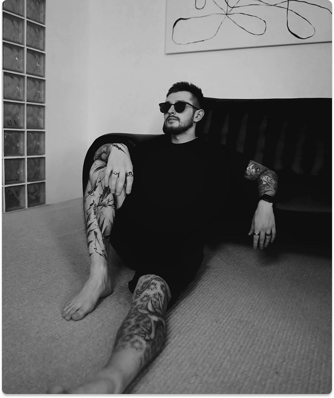
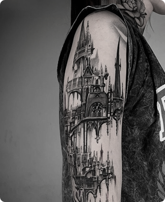
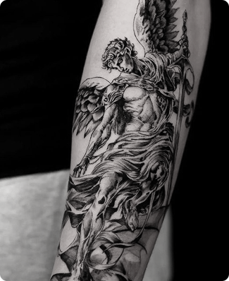
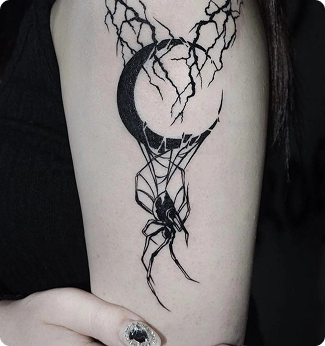
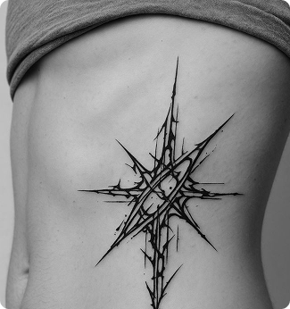
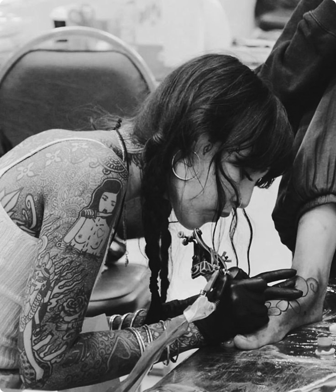
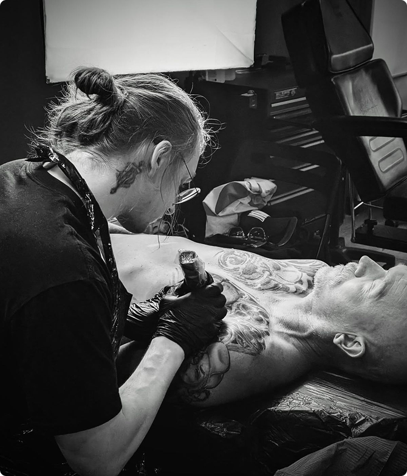
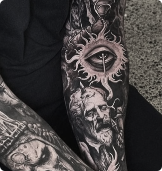
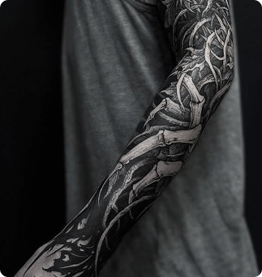

записаться10 лет стажа
Стиль и работы: Дмитрий — мастер, специализирующийся на готической и мрачной татуировке с элементами фэнтези. Его работы переполнены мистическими и философскими символами, часто встречаются изображения черепов, ангелов и демонов, а также архитектурные элементы, такие как разрушенные замки
и витражи.

Техники: Дмитрий активно использует технику тени и контурирования, а также черно-серый реализм для создания глубокой атмосферы.
Специализация: Татуировки в стиле готического реализма с элементами фэнтези и мистики. Особенно известен своей работой с черепами и образами ангелов и демонов.

7 лет стажа
Стиль и работы: Алина — мастерица, работающая в стиле мистического минимализма с использованием готических элементов. Она мастерски сочетает силуэты, простые линии и глубокие тени, чтобы создать элегантные, но мощные изображения. Её работы часто включают изображения птиц, таких как вороны и совы, а также абстрактные формы и символы, напоминающие древние руны и магические знаки.

Техники: Алина использует геометрическую технику для минималистичных работ, смешивая её с готическими элементами.
Специализация: Минималистичные готические татуировки, часто на основе символики и эзотерических знаков. Она известна своей точностью и аккуратностью в проработке маленьких деталей.


записаться
записаться5 лет стажа
Стиль и работы: Михаил работает в стиле тёмной фэнтези и готического сюрреализма, создавая на коже образы, которые погружают в мир тени и магии. Он часто изображает мифологических существ, таких как демоны, темные ангелы, а также готические архитектурные элементы, такие как арки и витражи. Его работы известны своим драматизмом и часто рассказывают целые истории через изображённые образы.

Техники: Михаил применяет чёрно-серый реализм для создания многослойных изображений и часто использует технику затушевки для создания мягких переходов между светом и тенью.
Специализация: Готическое фэнтези и сюрреалистичные татуировки. Специализируется на сложных, многослойных изображениях.
